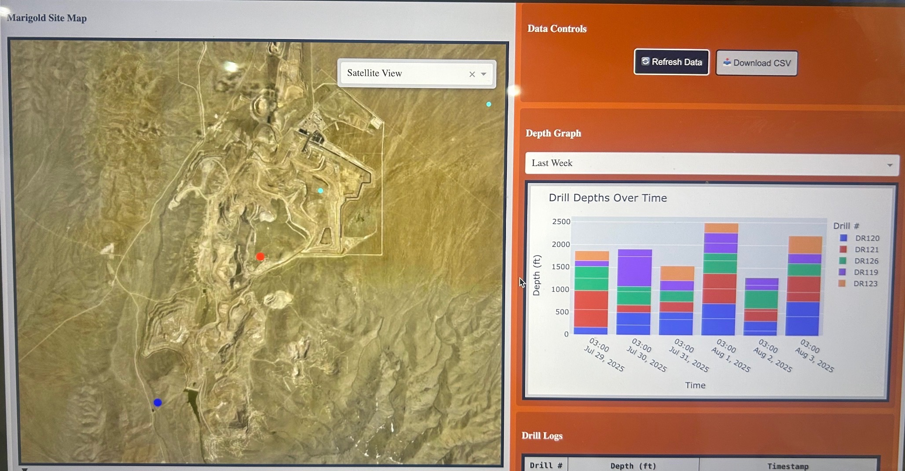
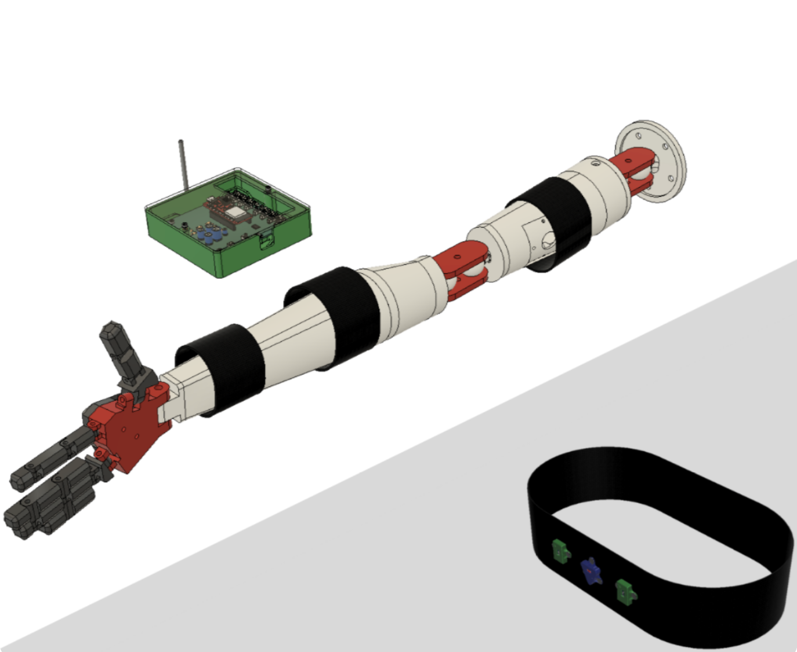
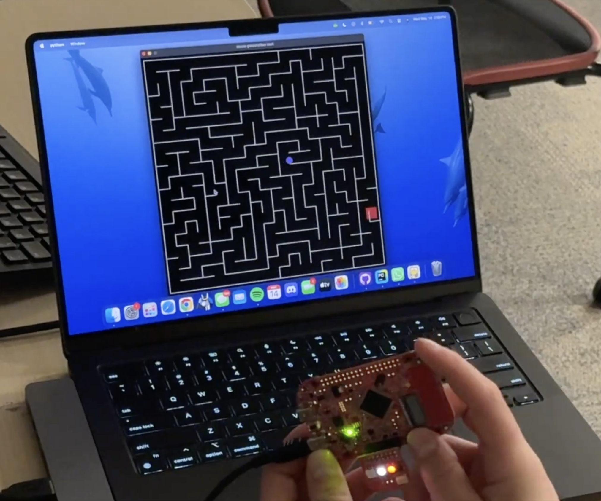
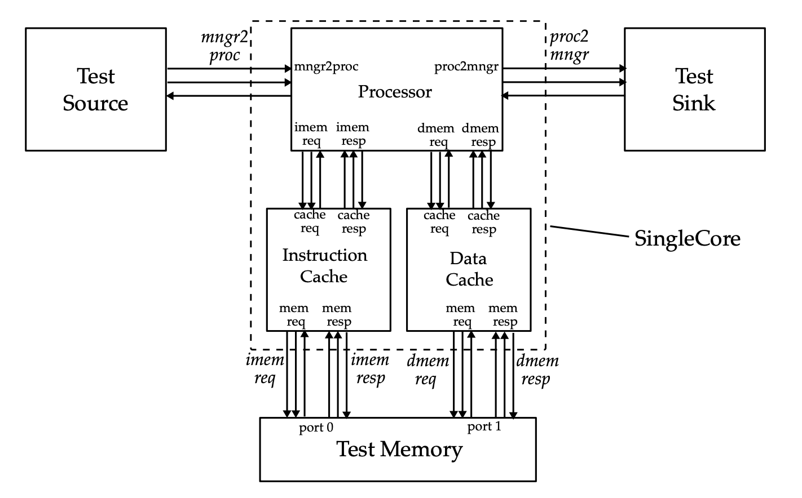

Mining Drill Data Dashboard

During my internship at SSR Mining, I developed an interactive dashboard to help visualize drilling activity at the Marigold mine site in Nevada, where operational data was previously difficult for non-technical higher-ups to access without having to dig through the deep network of the company data historian. The system aggregates drilling metrics such as depth, duration, and geospatial coordinates for six drills by extracting data from a PostgreSQL database using SQL, organizing it through a Lua script in the company’s data historian and placing the data into easily-identifiable tags, and generating an interactive geospatial visualization using Python. The dashboard displays drill locations within ~0.5° of latitude and longitude coordinates on an interactive map (plotting the most recent drill locations relative to a central local mine site server) alongside real-time drill logs and historical activity plots, allowing users to quickly interpret operational data without navigating complex backend systems. In addition to improving accessibility of drilling information, the structured tags and data pipeline developed for the project were integrated into the company’s updated Technical Data Center infrastructure. Due to company ownership, the dashboard itself cannot be shared publicly, but screenshots of key features are included.
Arm Torque Tracker

As the Electrical Engineering lead on a multidisciplinary project team developing a wearable elbow torque tracking device for the VentureWell DEBUT competition, I helped design hardware that measures muscle activity in the biceps, triceps, and brachialis muscle groups during the full range of throwing motions made by a user to identify early indicators of overuse injuries and help prevent them from happening. My contributions focused on PCB design, sEMG and IMU board selection and pin mappings, and data acquisition, including capturing accurate sEMG signal readings and storing them using a microcontroller and SD card system. Additional responsibilities included writing high-level technical reports for future project team endeavors, as well as assisting outreach and testing teams whenever applicable to help get real-world data for the device. Development tools included KiCad for PCB design, Arduino IDE for embedded programming and communication between the various boards, and hardware prototyping tools for soldering, signal testing, and debugging. A key technical challenge involved stabilizing voltage regulation across multiple sensor chips to ensure reliable signal readings while not overloading the main PCB, which required iterative troubleshooting of current flow and board-level power distribution evaluation. The project aims to improve biomechanical monitoring in athletic training and is currently being tested with external motion-capture facilities to refine the device specifications and usability.
Further details regarding the Arm Torque Tracker can be found using the following link: Arm Torque Tracker (Axio Recovery) Project.
Marble Maze Game - ECE 3140 (Embedded Systems) Final Project

For a final project in ECE 3140 (Embedded Systems), I helped develop an interactive marble maze game controlled by physically tilting an FRDM-KL46Z microcontroller board, taking advantage of the board’s gyroscopic capabilities. The system uses the board’s orientation sensors to detect tilt direction and translate those movements into player navigation within a randomly generated maze created in Python. Visual feedback is provided through the two on-board LEDs which change color when tilted to indicate positive and negative movement along the x and y axes. The project was implemented using C within the MCUXpresso IDE and incorporated core embedded systems concepts including GPIO pin mapping, concurrency, and real-time control logic. One technical challenge involved ensuring accurate LED responses for different orientations and maintaining stable system timing, which was addressed by refining the control logic and adjusting the board clock frequency from 15 MHz to 48 MHz. The project demonstrated practical implementation of sensor interfacing and hardware-software integration within an embedded system and allowed me to develop a skillset for iteratively debugging.
A link to the final project’s GitHub can be found using the following link:
GitHub Repository.
A link to a YouTube video made for the final project can also be found using this link:
YouTube.
Multi-Core Processor - ECE 4750 (Computer Architecture) Final Project

In ECE 4750 (Computer Architecture), I helped design and evaluate both single-core and multi-core processor systems to study architectural tradeoffs between performance, scalability, and system complexity. The multi-core design connects four pipelined processors through a router-based ring network that enables communication with a shared banked data cache while maintaining private instruction caches for each core. To evaluate the architecture, we implemented benchmark tests and developed a multi-threaded sorting algorithm that distributes workloads across cores to exploit parallel execution. Results showed that while the multi-core system introduces additional latency for single-threaded workloads due to network and memory hierarchy overhead, it significantly improves performance when parallel computation is available. The project reinforced key principles of computer architecture, including the tradeoffs between hardware complexity, memory access latency, and parallel processing performance.
A link to the final report written for this project can be found using the following link: Report.